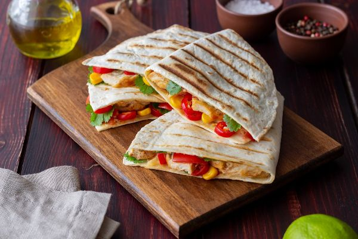

-
Colorful Quesadillas
These quesadillas are super simple, colorful, and cheesy. Try adding your own colorful vegetables to this appetizer.
Ingredients: Serves 8- 8 ounces fat-free cream cheese
- 1/4 teaspoonigarlic powder
- 8 i ortillas (6″ across)
- 1 large sweet red pepper
- 1 cup shredded low-fat cheese
- 2 cups spinach leaves (fresh, or 9 oz. frozen, thawed, and squeezed dry)
Instructions: Wash hands with soap and water.
Gently rub red pepper and fresh spinach under running water. Pat spinach leaves dry with paper towels.
Take out seeds, stem and ribs of red pepper and cut remaining pepper into small pieces.
In a small bowl, mix the cream cheese and garlic powder.
Spread about 2 tablespoons of the cheese mixture on each tortilla.
Sprinkle about 2 tablespoons bell pepper and 2 tablespoons cheese on one half of each tortilla.
Add spinach: 1/4 cup if using fresh leaves OR 2 Tablespoons if using frozen. Fold tortillas in half.
Heat a large skillet over medium heat until hot. Put 2 folded tortillas in skillet and heat for 1-2 minutes on each side or until golden brown.
Remove quesadillas from skillet, place them on the platter, and cover with foil to keep warm while cooking the remainder.
Cut each quesadilla into 4 wedges. Serve warm.
Notes: Add chicken and/or black beans for additional protein. Try corn, tomatoes and cilantro for tasty optional add-ins.